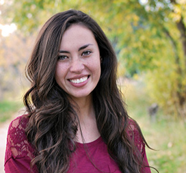

About Me

My name is Amy Lyne, and I am an aspiring UX Designer/Front End Developer. I have a BS degree in chemical and biochemical engineering with a minor in biomedical engineering, but I have recently decided to follow my passion. I have always had a knack for design, and I love to make anything and everything user friendly and aesthetically appealing. I am unafraid to take on any challenge and am looking forward to this career change.
Some of my hobbies include photography, playing with Photoshop, organizing sock drawers, and watching cat videos. Hope to hear from you soon!
Connect with Me